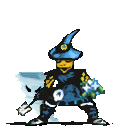
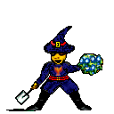
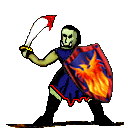
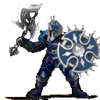

| Übersicht,
Vorschläge |
|
System/Engine/Technisches - Wichtel/Halbork Nationskleider (21  ) )
|
| Arda Iluvatar (RIP) |
So ist es momentan:
Wichtel/Halbork können keine nationskleider haben, weil sie nicht in gebäude gestellt werden können. Nur wenn die Chars in die Gebäude gestellt werden wird die nationskleidung sichtbar
So soll es werden:
Natürich soll die Nationskleidung bei Wichteln und Halborks auch angezeigt werden
Vorteile für das Spiel:
Keine markante, lediglich die Tatsache, dass auch Wichtel und Halborks in Nationskleidung erscheinen
Nachteile für das Spiel:
Wohl eher keine ausser man hat probleme mit neuen Bildern ^^
Mögliche Problematiken:
Programmieraufwand? Bin in diesem Gebiet nicht so erhaben, aber es müsste sich doch ein weg finden lassen
Sonstiges:
- |
27.05.07 10:40
|
|
| Nherin von dem Glutwindclan (RIP) |
Ich hab sogar Nat-Kleidung für die Berufslosen gemacht :o) und für die Armeeführer ^^
Also gerne doch, wüsste nicht was dagegen spricht. |
27.05.07 10:44
|
|
| Grumbart (RIP) |
Warte ich auch schon lange drauf.... |
27.05.07 10:47
|
|
| Kage Hitomi (RIP) |
Finde ich immernoch richtig, den Vorschlag!
Besonders, da Arda uns so schöne Halbork und Wichtelgrafiken gemacht hat und ich die nur in der Charbeschreibung vorführen kann :( |
27.05.07 11:13
|
|
Aahz
 |
sehr gute Sache |
27.05.07 13:16
 |
|
| Cyrik (RIP) |
Da die Grafiken ja auch ziemlich auffallend sind würde ich mal sagen, es geht auch darum, dass Wichtel und Halborks auf den ersten Blick zu erkennen sein sollen. Und das sind die in Kages charbeschreibung zum Beispiel überhauptnicht. |
27.05.07 13:23
|
|
| Arda Iluvatar (RIP) |
@Adaman Marbrand
*lol*
schau dir mal die verschiedenen nationskleider an ^^ manchmal weiss man nicht mal mehr was magier und krieger ist..
ich denke es geht einfach mal um s prinzip dass man die erstellten grafiken auch sehen will und nicht nur für nichts und wieder nichts herstellt -.-



 |
27.05.07 13:37
|
|
| Kage Hitomi (RIP) |
Adaman, das liegt aber ein wenig an der Größe der Grafiken, wie Arda hier gerade gut demonstriert hat ^^
In ner normalen Gruppe sieht mans, weil die Grafiken dort größer und demnach eindeutiger sind ;)
Außerdem sag ich dazu mal: Wer genug Zeit hat, sich die NPC´s des anderen anzusehen oder sie sich nimmt, der hat auch genug Zeit mal kurz zu überlegen obs Halborks/Wichtel oder Standards sind.
Und wer bei nem Fremden die Natkleidung bewundert und rumrätselt, was das andere sein könnte ist (finde ich) eh selbst Schuld, wenn er eins aufs Dach bekommt ;) |
27.05.07 16:07
|
|
| Cyrik (RIP) |
Kage du kämpfst nicht besonders oft kann das sein? In den Situationen in denen es wichtig ist zu wissen ob der gegner Wichtel hat oder nicht, hat man normalerweise keine Zeit groß rumzurätseln. |
27.05.07 16:20
|
|
| Arda Iluvatar (RIP) |
die nationsgrafiken sollten ja auch so aussehen wie die entsprechenden charaktere dahinter..
wenn die Argumentation lautet, man könne den unterschied nicht sehen, dann müsste man aber auch diverse Nationskleidungen verbieten bei denen nicht klar ersichtlich ist ob es sich um Heiler oder Magier handelt.
Die Grafiken sollten in etwa dem vorgegebenen Muster entsprechen und ich bezweifle dass jemand obige bilder mit denen eines normalen chars verwechseln würde, zumal Form und Grösse stark von den übrigen Chars abweichen..
Ich denke worauf Adaman Marbrand hinaus will, ist, ob er es sich mit seiner Magiergruppe erlauben kann den gegner anzugreifen, wenn dieser Wichtel hat. Ich glaube dieser Bruchteil einer Sekunde den man braucht, um fest zu stellen ob der Gegner wirklich Wichtel hat sollte wohl reichen! Falls die Grafiken wirklich so irreführend sind, dass man sich nicht mehr sicher sein kann, was man vor sich hat, kann man sich ja immer noch bei der Spielleitung beschweren und um änderung der irreführenden grafiken bitten. Ich denke jedoch, dass in einer solchen situation so oder so ein PVP meister gegenüber steht und sollte man nicht selbst mit einer wichtelgruppe angreifen, sollte man es besser bleiben lassen und hoffen dass man in der zeit in der man den gegner kurz betrachtet nicht selbst niedergemacht wird ...
Ich bin klar für die Wichtel/Halbork bilder weil sie meiner meinung nach genau so zu der Nationskleider gehören wie alle anderen Bilder! |
27.05.07 17:07
|
|
Slam ODR
 |
sorry ada, deine argumentation hinkt hier unglaublich. ob ein nationskrieger einem krieger aehnlich sieht, ein nationswichtel einem wichtel, dass ist aufgabe des supports, je nachdem wird die nationskleidung freigegeben oder nicht.
das hat absolut nichts damit zu tun halbork/wichtel/armeeführer/berufslose nationskleidung einzuführen oder nicht. einen grünen wichtel mit einem pinken hut erkennt trotzdem noch jeder als wichtel. |
28.05.07 2:31
|
|
| Arda Iluvatar (RIP) |
ja eben und wenn die Nationskleidung drin ist soll auch die Wichtel/Halbork Kleidung erkennbar sein. Dann hat der Support sie für OK befunden und demnach sollte sie auch im Spiel erscheinen |
28.05.07 14:14
|
|
| Don Gom (RIP) |
eigentlich kein neues Anliegen:
http://www.scherbenwelten.de/kommnew.php?viewer=&css=&gesucht=1&kategorie=13&beitrag=73659
http://www.scherbenwelten.de/kommnew.php?viewer=&css=&gesucht=1&kategorie=13&beitrag=68631
Man hätte auch einen älteren Vorschlag wieder hervorheben können und mit einen Smily das Thema aktualisieren.
Ich vermute mal das dieses Sachen sind wo der Support schon dran arbeitet...... aber leider noch nicht fertig sind. |
29.05.07 14:23
|
|
| Arda Iluvatar (RIP) |
wäre schön wäre schön ^^ |
29.05.07 19:16
|
|
Übersicht,
Vorschläge
|